3. Claude 업무 활용
이 장의 목차
90분. 문서 대조 → Projects에 자료·지침 저장 → 공개 문서의 근거 확인 → 대시보드 만들기 순서로 진행합니다. Windows 앱의 Claude 대화 화면을 사용합니다.
| 시간 | 실습 | 만들 결과 |
|---|---|---|
| 0~25분 | CL01 문서 통합 검토 | 문서 대조표·확인 질문 |
| 25~60분 | CL02 Projects·공개 문서 | 근거가 붙은 답변 |
| 60~90분 | CL03 대시보드·Artifact | 필터로 볼 수 있는 진행현황 |
파일 선택: 같은 문서의 Word·PDF·HWPX 중 한 형식만 사용합니다. AI 첨부에는 아래 PDF를 권장합니다. 공개 원문은 PDF 그대로 사용합니다.
CL01. 여러 문서의 조건 대조하기
목표: 문서별 조건을 비교하고 충돌·미확정 제안·담당자 질문을 구분합니다.
지금 준비할 파일
첨부 4개: 서로 다른 PDF를 한 번씩 넣습니다.
| 파일 | 쓰는 이유 |
|---|---|
| 입찰공고 PDF | 사업 조건·제출기한 확인 |
| 제안요청서 PDF | 상세 산출물·평가 기준 확인 |
| 회의록 PDF | 변경 제안과 승인 여부 확인 |
| 문서 검토 지침 PDF | 대조표의 작성 기준 확인 |
바로 할 일
- Claude에서 새 대화를 엽니다. Code 화면이면 Claude 대화 화면으로 이동합니다.
- 위 PDF 4개를 첨부하고 파일명이 중복되지 않았는지 봅니다.
- 다음 요청을 보냅니다. 답변 첫 부분의 서로 다른 문서가 4종인지 확인합니다.
요청문 원본: CL01
입찰공고문·제안요청서·회의록·문서검토 업무지침을 함께 검토해 주세요.
1. 먼저 파일명·문서번호·각 문서의 역할을 목록으로 확인하세요.
2. 사업명·사업금액·기간·제출기한·산출물·평가배점을 문서별로 독립 추출하세요.
3. 대조표를
'항목 / 공고 값·근거 / 제안요청서 값·근거 / 회의록 내용·상태 /
일치·불일치·미제공·미확정 제안 / 담당자 확인 질문'으로 작성하세요.
4. 근거는 파일명·문서번호·항목 번호 또는 페이지로 표시하세요.
회의 제안을 확정 조건에 합치거나 충돌 날짜 중 하나를 자동 선택하지 마세요.
자료에 없는 문서 우선순위·낙찰 기준·한전 내부 규정을 정하지 마세요.
우선 확인할 사항 3개 이내로 마무리하세요.
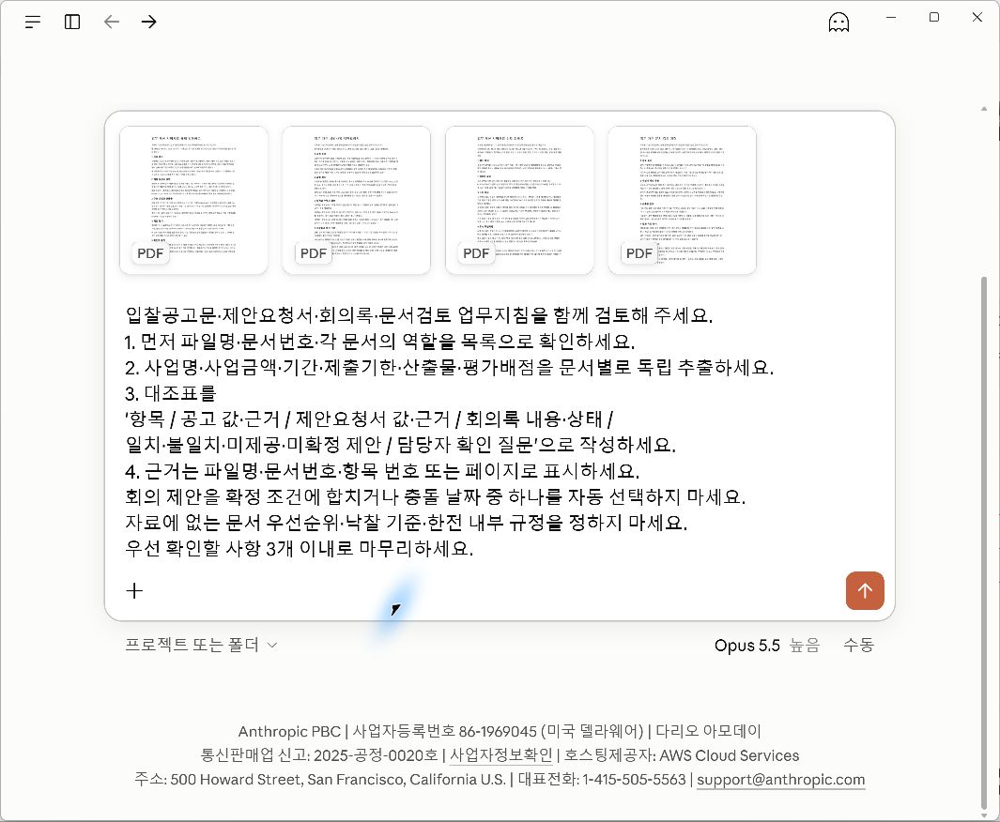
원문을 열어 확인하고 고치세요
| 확인할 것 | 확인 기준 |
|---|---|
| 제출기한 | 문서별 날짜·항목을 따로 표시했는지 |
| 회의 제안 | 현재 기재 조건·제안·승인 증거를 구분했는지 |
| 산출물 | FAQ·평가 사례·교육 횟수를 구분했는지 |
| 배점 | 기술 세부 합계와 기술·가격 합계를 계산했는지 |
| 근거·미제공 | 실제 항목을 가리키는지, 없는 연락처·규정을 만들지 않았는지 |
공고·제안요청서·회의록의 해당 항목을 직접 열어 읽습니다. 날짜를 하나로 정하거나 회의 제안을 확정 조건으로 넣었으면 같은 대화에 아래 요청을 보냅니다.
요청문 원본: CL01R
방금 대조표의 제출기한과 산출물 개수, 회의 제안을 원문과 다시 대조해 주세요.
충돌하는 값은 양쪽 문서의 값과 근거를 따로 유지하고, 변경 승인 문서가 없으면 제안을 미확정으로 표시하세요.
불일치 값을 임의로 통일한 부분이 있다면 되돌리고, 수정 전후·수정 이유·담당자가 확인할 문서를 제시하세요.
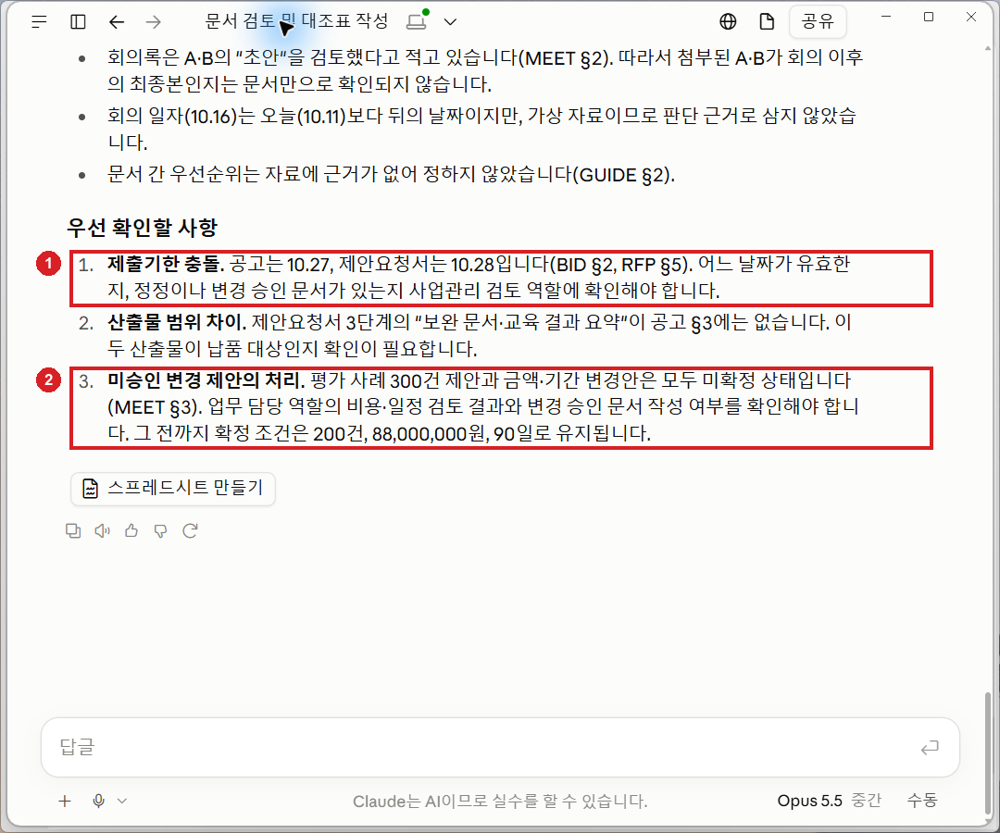
문서 목록·대조표·확인 질문·수정 이유를 저장합니다. 읽히지 않는 PDF는 다시 첨부하거나 같은 내용의 Markdown을 사용합니다. 일부만 읽었다면 빠진 파일을 지정합니다. 표가 길면 기한·금액·기간부터 확인합니다.
성공 확인
AI 대조표가 기한 충돌과 미승인 제안을 구분하고, 근거와 확인 질문을 제시했는지 확인합니다.
선택 참고: 대조표의 확인 답
| 항목 | 원문에서 확인할 답 |
|---|---|
| 제출기한 | 공고 §2: 2026-10-27 17시 / 제안요청서 §5: 2026-10-28 17시. 회의록 §4에도 최종 날짜 없음 |
| 평가 사례 | 현재 기재값 200건 / 회의록 §3의 300건은 승인 증거 없는 제안 |
| 산출물 | 제안요청서 §3의 보완 문서·교육 결과 요약은 공고 §3에 별도 기재 없음. 납품 범위 확인 필요 |
| 평가배점 | 기술 80점, 기술·가격 합계 100점 |
파일명을 확인할 수 없다면 추정하지 말고 문서번호·항목 번호를 근거로 확인합니다. “확정 조건”보다 “첨부 문서의 현재 기재 조건”이 정확합니다. 제공되지 않은 금액·기간 변경안을 만들지 않습니다.
CL02. Projects에 지침을 저장하고 근거 찾기
목표: 자료와 검토 지침을 프로젝트에 저장하고 근거가 붙은 답변을 받습니다.
지금 준비할 파일
프로젝트 자료 4개: CL01에서 쓴 네 PDF를 다시 준비합니다. 일반 대화 첨부와 프로젝트 자료 등록은 별개입니다.
| 파일 | 쓰는 이유 |
|---|---|
| 입찰공고 PDF | 공고의 조건·제출기한 근거 |
| 제안요청서 PDF | 산출물·평가 기준 근거 |
| 회의록 PDF | 변경 제안·미확정 상태 근거 |
| 문서 검토 지침 PDF | 검토 기준 유지 |
바로 할 일
- Projects를 엽니다.
- 새 프로젝트를 선택합니다.
- 이름을
업무개선_문서검토로 입력합니다. - 프로젝트 생성을 선택합니다.
- 자료 추가 **+**에서 PDF 4개를 등록합니다.
- 처리 완료를 확인합니다.
- Set project instructions를 엽니다.
- 다음 지침을 붙여넣습니다.
- 지침 저장을 선택합니다.
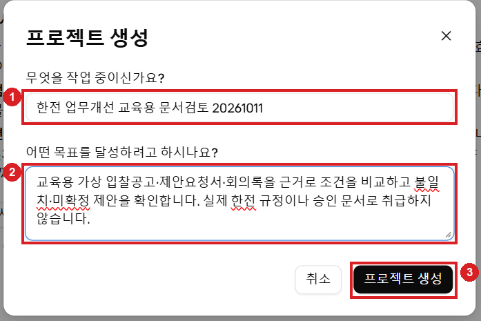
요청문 원본: CL02I
파일명·문서번호·기재 항목을 근거로 답한다.
공고·제안요청서의 조건, 회의 제안, 승인된 변경을 구분한다.
충돌 값은 양쪽을 별도로 표시하고 최종값을 임의 선택하지 않는다.
근거가 없으면 미제공·확인 필요로 표시한다.
2025년 운영 실적과 2026년 용역 조건, 축약 FAQ와 정식 산출물, 계약 건수와 평가 사례 수를 구분한다.
외부 공개자료는 기관·시행일·적용 범위를 확인하며 이 사업이나 한전에 자동 적용하지 않는다.
출력은 근거 대조표와 담당자 확인 질문이다.
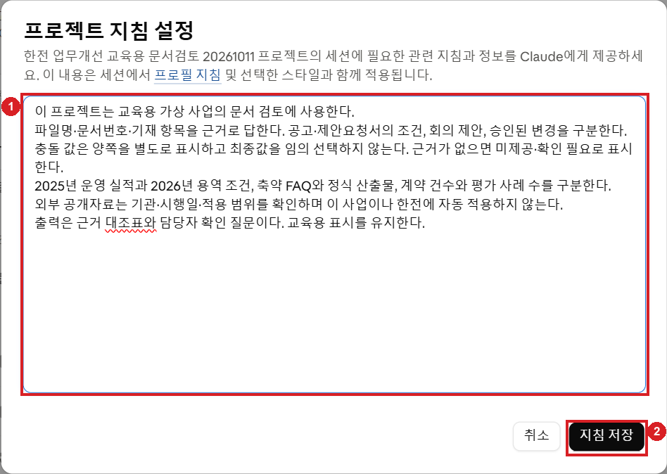
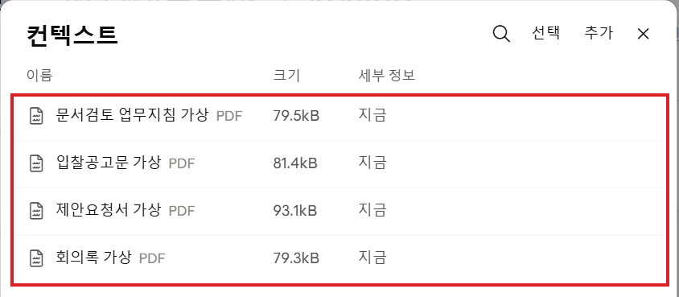
프로젝트 안에서 질문하세요
프로젝트 안의 새 대화를 열고 다음 요청을 보냅니다. 답변의 문서명·번호·항목을 원문과 대조합니다.
요청문 원본: CL02
프로젝트에 저장한 문서만으로 답해 주세요.
제출해야 할 파일은 무엇이고, 제출기한은 문서 사이에 일치하나요?
회의록에서 제안한 산출물 변경은 승인됐나요?
현재 문서의 기재 기준·변경 제안·승인 증거를 구분하세요.
각 답변에 파일명·문서번호·항목 번호를 붙이고, 없으면 미제공이라고 표시하세요.
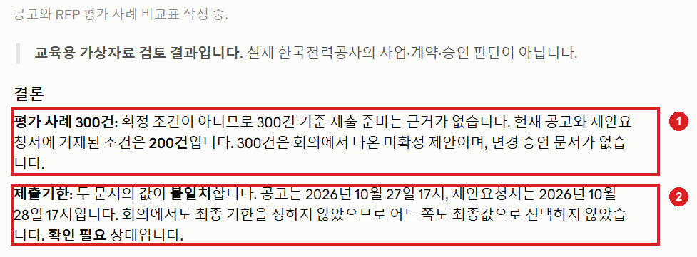
날짜를 통일하거나 제안을 승인된 값으로 쓰면 CL01R 요청을 다시 사용합니다. 회의일을 실제 일정의 오류로 단정하거나 구체적인 금액·기간 변경안이 있다고 쓰지 않도록 확인합니다.
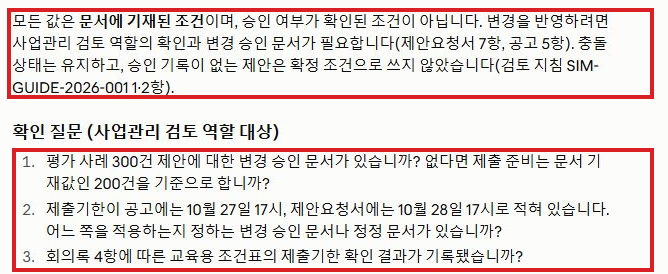
Projects가 없으면 한 대화에 자료 4개와 위 지침을 함께 넣어 진행합니다. 프로젝트에 저장하는 기능과 한 대화에서 자료를 읽는 기능은 구분합니다. Projects 사용 안내
성공 확인
프로젝트 자료 4개·저장 지침을 확인하고, 새 프로젝트 대화의 답변이 원문 근거를 제시하면 완료입니다.
선택 참고: Projects 답변 예시
200건은 현재 문서의 기재값, 300건은 미승인 제안, 변경 승인 문서는 미제공으로 구분합니다. 제출기한 두 값은 유지하고 확인 질문을 세 개 이내로 정리합니다.
CL02P. 공개 입찰·규정 문서에서 근거 찾기
목표: 공개 문서에서 조건·예외·근거를 찾아 적용 범위를 구분합니다.
CL02의 35분 안에서 이어서 진행합니다.
지금 준비할 파일
추가 등록 2개: 공개 PDF를 CL02 프로젝트에 추가합니다. 기존 자료 4개와 합해 프로젝트 자료는 6개입니다.
| 파일 | 쓰는 이유 |
|---|---|
| 화학물질안전원 입찰공고 PDF | 금액·기간·제출 안내·평가 분모 찾기 |
| 계약집행기준 연혁 PDF | 조항의 조건·예외·시점 읽기 |
화학물질안전원 공고와 지방자치단체 계약집행기준 연혁본은 한전 내부 규정이 아닙니다. 이번에는 근거를 찾는 방법을 연습합니다. 실제 한전 업무에는 해당 사업의 계약문서·적용 규정·개정 시점을 담당자에게 확인해야 합니다.
바로 할 일
- 프로젝트에 위 PDF 2개를 추가합니다.
- 새 프로젝트 대화에서 다음 요청을 보냅니다.
- 발행 기관·공고/시행일·현행/연혁 구분을 읽습니다.
- 제시된 근거를 PDF에서 직접 찾아 대조합니다. 찾을 수 없는 근거는 확인된 것으로 보지 않습니다.
요청문 원본: CL02P
추가한 공개 입찰공고와 규정 자료를 검토하되 사업에 자동 적용하지 마세요.
먼저 각 문서의 발행 기관·제목·시행 또는 공고 시점·현행/연혁 여부·적용 범위를 확인하세요.
공개 입찰공고에서 금액·기간·제출자료·변경 또는 문의 절차를 근거 위치와 함께 추출하세요.
이 공개 문서로 사업이나 한전의 조건을 확정할 수 없는 부분을 설명하고, 실제 판단에 필요한 추가 문서를 적으세요.
조항을 찾을 때 해당 문구와 항목을 제시하되 제공되지 않은 법적 우선순위나 현재 규정 판단을 만들지 마세요.
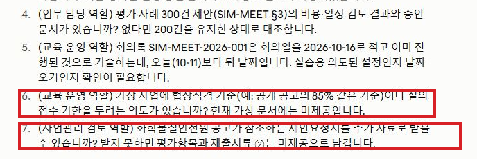
답변에 없는 금액·기간 변경안이 등장하면 “변경 내용은 제공되지 않았으니 기재 조건과 미확정 제안을 구분해 주세요”라고 수정 요청합니다. 공개 규정의 조항을 찾았다는 것만으로 한전 적용이나 사업의 승인 여부를 정하지 않습니다.
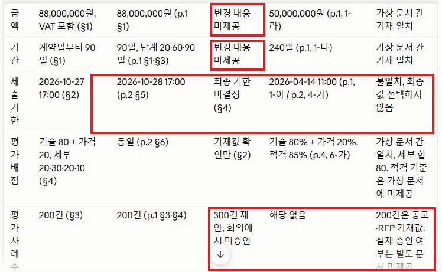
원문에서 확인할 부분
- 공고 PDF 2·3쪽의 가격입찰서·제안서 제출 순서를 읽고 두 표현이 다른지 확인합니다.
- 공고 PDF 4쪽의 기술 배점한도 80점에 대한 85%를 계산합니다. 총점 85점과 구분합니다.
- 규정 PDF 275쪽의 14일, 277쪽의 30일을 시작 시점·해야 할 일·조건·예외와 함께 읽습니다.
- 이 공개 문서만으로 첨부 문서의 200→300건 제안이나 제출기한 충돌이 해결되는 것은 아닙니다.
숫자뿐 아니라 무엇의 숫자인지·조건·예외·근거를 함께 확인합니다. AI가 놓친 내용도 원문에서 확인합니다.
성공 확인
발행 기관·시점·적용 범위와 원문 근거의 조건·예외를 확인합니다.
선택 참고: 원문 해설
실제 제출 순서나 개별 계약 적용을 대신 결정하지 않습니다.
| 확인할 항목 | 원문 해설 | 근거 위치 |
|---|---|---|
| 제출 순서 충돌 | PDF 2쪽은 가격입찰서와 제안서의 순서에 관계없이 제출 가능이라고 안내합니다. PDF 3쪽은 제안서 제출 완료 후 가격입찰서 제출 가능 및 제안서 최종제출 완료 후 가격입찰서 진입 가능이라고 안내합니다. 같은 두 제출물에 대한 표현이 다릅니다. 한쪽을 자동 선택하지 않고, 발주기관의 최신 정정공고·제출 안내와 실제 나라장터 절차를 확인할 사항으로 남깁니다. AI 답변에 빠져 있어도 원문에서 확인할 사항입니다. | 공고 PDF 2쪽 §4-나 하단; PDF 3쪽 첫 문단·제출 유의사항 |
| 85%의 분모 | 기술능력평가 80점·가격평가 20점이며, 협상적격 기준은 **기술능력평가 배점한도의 85%**입니다. 80 × 0.85 = 68점, 즉 기술점수 68/80 기준입니다. 전체 합산 100점 중 85점이라는 뜻이 아니며 가격점수를 더해 이 기술 기준을 대신하지 않습니다. 이 계산은 해당 공고의 문구 해석 연습입니다. |
공고 PDF 4쪽 §6-가 |
| 14일의 조건 | 계약의 기본방침 변동 없이, 과업내용서의 용역 항목을 변경해 발주기관에 유리하다고 판단되는 제안에 관한 항목입니다. 계약담당자는 제안요청을 받은 날부터 14일 이내 승인 여부를 통지합니다. 14일 내 무조건 승인하거나 자동 승인된다는 뜻이 아닙니다. 과업변경은 원칙적으로 해당 부분 이행 전에 완료하고 긴급한 필요의 예외는 협의·시기 명확화를 함께 읽습니다. | 규정 제9장 제6절 8-가~다; PDF 274~275쪽 / 인쇄 272~273쪽 |
| 30일의 조건·예외 | 계약상대자의 계약금액조정 청구를 받은 날부터 30일 이내 조정에 관한 항목입니다. 예산배정 지연 등 불가피한 경우 협의로 기한을 연장할 수 있고, 조정할 예산이 없으면 공사량·업무량 등의 조정 규정이 있습니다. 필요한 보완요구 통보부터 보완 완료 통지까지는 기간에 산입하지 않습니다. 해당 청구는 준공대가(완료대가) 수령 전에 해야 조정금액을 지급받을 수 있다는 조건도 함께 확인합니다. 용역은 지시·승인된 과업변경에 따른 금액조정 항목과 연결해 읽습니다. | 규정 제9장 제7절 1-나-1)·다-1)~3); PDF 277쪽 / 인쇄 275쪽 |
| 첨부 문서와의 관계 | 첨부 공고·RFP의 200건은 현재 문서 기재값이고 회의록의 300건은 승인 증거 없는 제안입니다. 공고 10월 27일·RFP 10월 28일의 기한도 그대로 다릅니다. 공개 자료를 읽었다는 이유로 제안을 승인하거나 날짜를 통일하지 않습니다. 적용 문서·담당자 확인 및 변경 승인/정정 문서가 필요합니다. | SIM-BID §2·3; SIM-RFP §3·4·5; SIM-MEET §3·4 |
| 공고 기본 항목 | 원문 값·위치 |
|---|---|
| 공고 | 화학물질안전원 제2026-28호, 2026-04-01, PDF 1·6쪽 |
| 예산·기간 | 50,000,000원(VAT 포함), 계약일부터 240일, PDF 1쪽 |
| 가격입찰 접수 | 2026-04-09 10:00~2026-04-14 11:00, PDF 1쪽 |
원문 해설 파일: Word · PDF · HWPX. AI 답변 예시: Word · PDF · HWPX. 필요할 때 한 형식만 선택합니다. AI 예시가 모든 충돌·조건을 찾아낸 것은 아니므로 위 원문 확인을 생략하지 않습니다.
CL03. 진행현황 대시보드·Artifact 만들기
목표: 12개 과제를 상태·담당 역할로 걸러 보는 화면을 만들고 숫자를 확인합니다.
지금 준비할 파일
AI 첨부 1개: CSV입니다. Excel은 PC에서 대조할 때만 열고 중복 첨부하지 않습니다.
| 파일 | 쓰는 이유 |
|---|---|
| 진행현황 CSV | 12개 과제의 대시보드 입력 |
| 대조용 진행현황 Excel | 화면의 과제 ID·상태·역할·값 확인 |
바로 할 일
- 새 대화에 CSV 1개를 첨부합니다.
- 다음 요청을 보냅니다.
- 생성된 Artifact를 열어 표와 필터가 보이는지 확인합니다.
요청문 원본: CL03
프로젝트_진행현황_가상.csv의 12개 과제를 읽고 진행현황 대시보드를 Artifact로 만들어 주세요.
CSV 열은 과제 ID,과제,담당 역할,시작일,예정일,상태,진행률 %,쟁점,근거 문서,자료구분입니다.
기준일은 자료에 명시된 2026-11-30입니다.
예정 착수일을 실제 계약일로 확정하지 마세요.
표시: 전체·상태별 건수, 담당 역할별 과제, 예정일·진행률·쟁점·근거 문서를 담은 상세 표.
상태와 담당 역할 필터를 조작할 수 있게 하고 필터 후 건수·목록도 함께 바뀌게 하세요.
제출기한 충돌과 미확정 제안은 해결된 것처럼 숨기지 마세요.
지연 판단이 가능하지 않으면 확인 필요로 남기세요.
데이터는 첨부 CSV에만 근거하고 외부 서비스·실시간 정보는 연결하지 마세요.
기준일을 넣으세요.
실제 실행 가능한 화면을 만들 수 없다면 결과 형태와 제한을 설명하고 코드·문서·이미지를 동작한 앱이라고 표현하지 마세요.
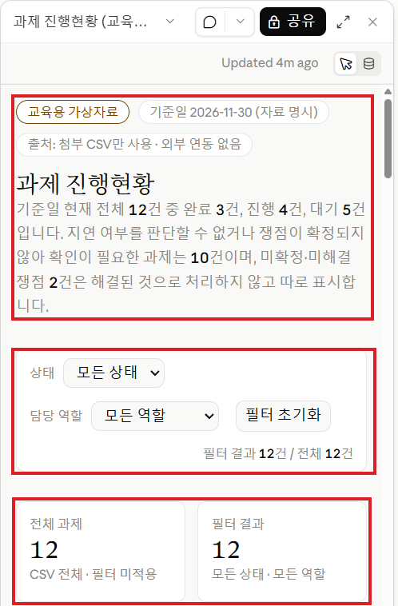
앱이 응답하지 않으면 같은 계정의 웹에서 저장된 대화를 열어 결과를 확인합니다. 단순 코드나 이미지가 나온 경우 실제 작동하는 화면과 구분합니다.
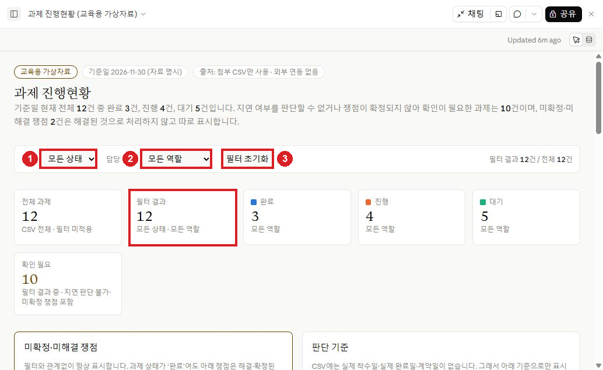
필터를 직접 눌러 확인하세요
| 할 일 | 확인할 것 |
|---|---|
| 전체 보기 | 과제 ID 12개가 중복 없이 있는지 |
| 진행 선택 | 진행 과제만 남고 숫자도 맞는지 |
| 고객안내담당 함께 선택 | 상태·역할 두 조건이 함께 적용되는지 |
| 검증담당 선택 | 해당 역할만 표시되는지 |
| 필터 초기화 | 전체 목록으로 돌아오는지 |
| 상세 표 읽기 | 쟁점·근거 문서·기준일이 남아 있는지 |
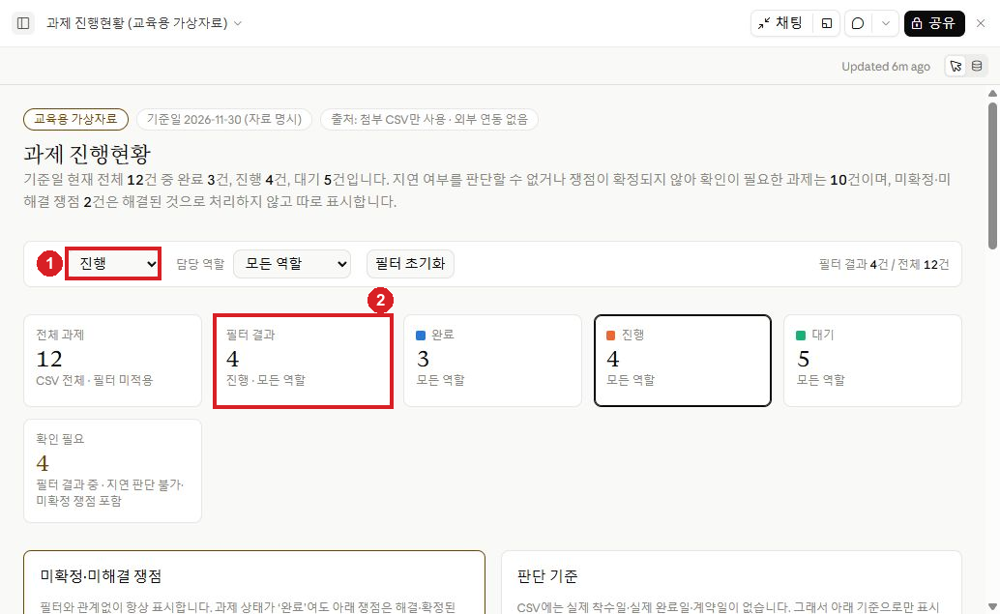
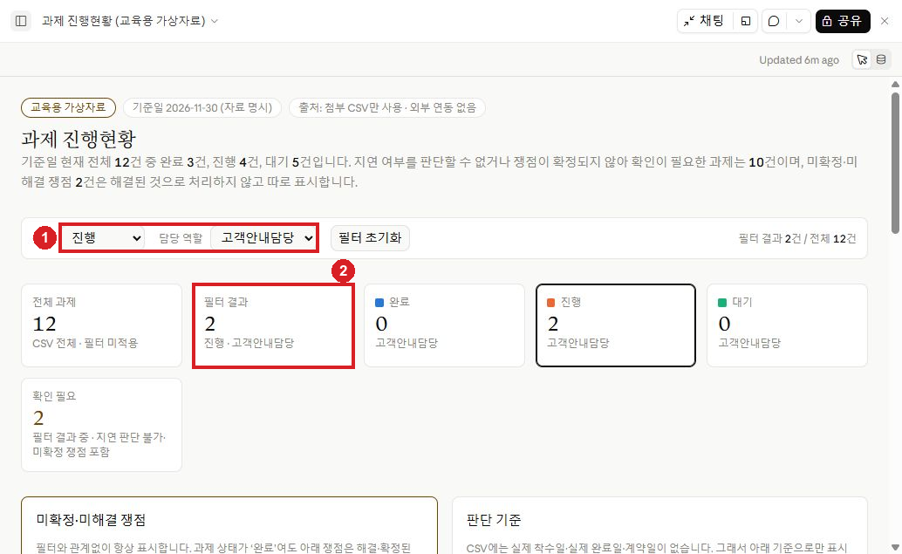
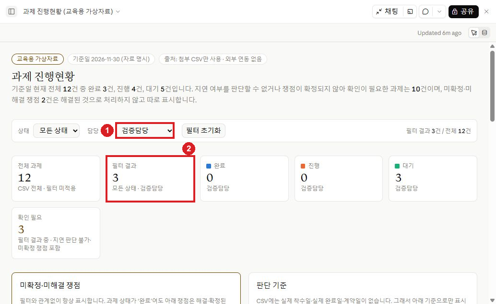
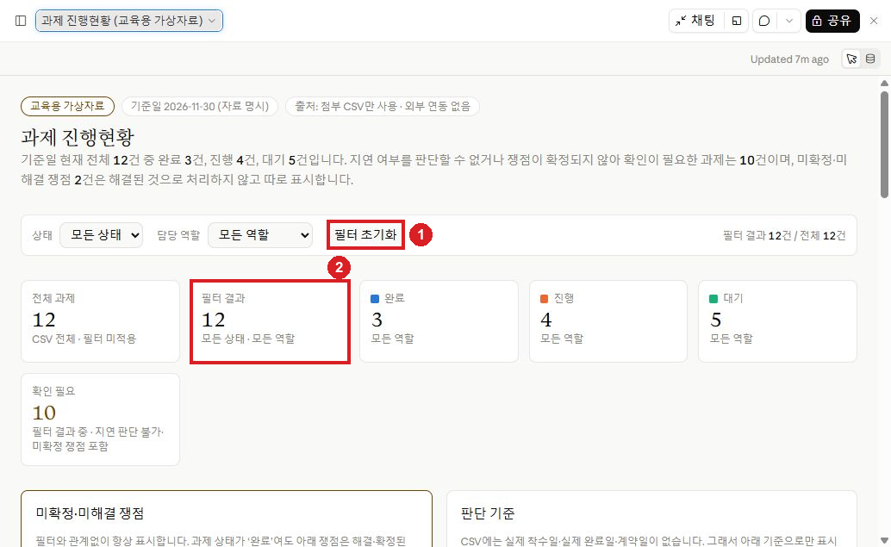
카드 숫자와 표가 다른 조건을 쓰면 같은 대화에서 다음 요청을 보냅니다.
요청문 원본: CL03R
Artifact의 필터와 표시 숫자를 다시 점검해 주세요.
전체 해제 상태의 과제 ID 목록이 CSV의 12개 고유 과제와 일치하는지 확인하고,
상태 하나 또는 담당 역할 하나를 선택하면 카드 숫자와 상세 표가 같은 필터를 적용하도록 수정하세요.
필터 해제로 전체 목록을 복원하고, 쟁점·근거 문서·기준일를 유지하세요.
수정한 부분과 검증 방법을 설명하세요.
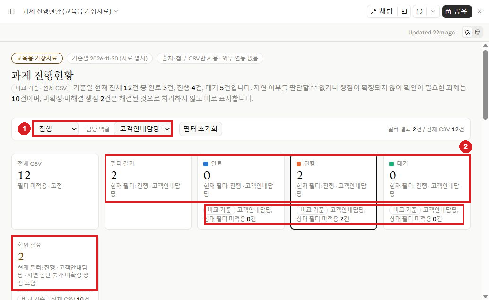
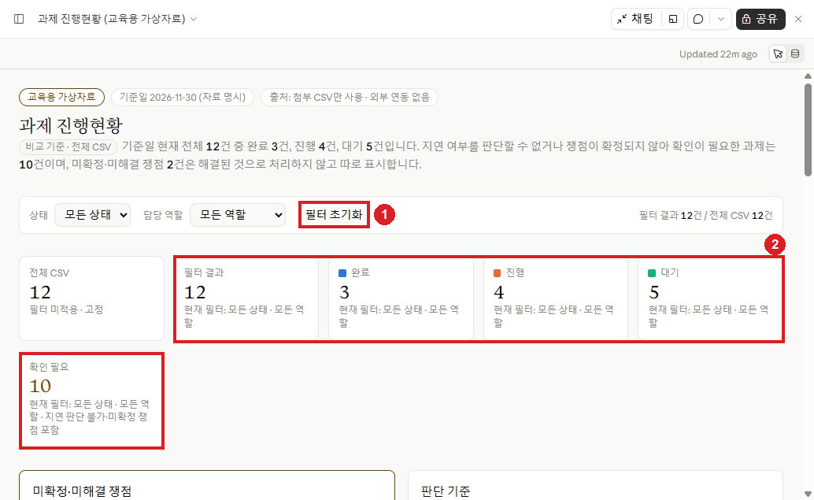
결과와 원자료를 저장하세요
제공되는 저장·내보내기 메뉴를 사용하고 다시 엽니다. 출처의 원자료를 내보낼 수 있으면 CSV → File → Download → 파일 저장으로 저장합니다. CSV 내보내기와 대시보드 HTML 다운로드는 구분합니다.
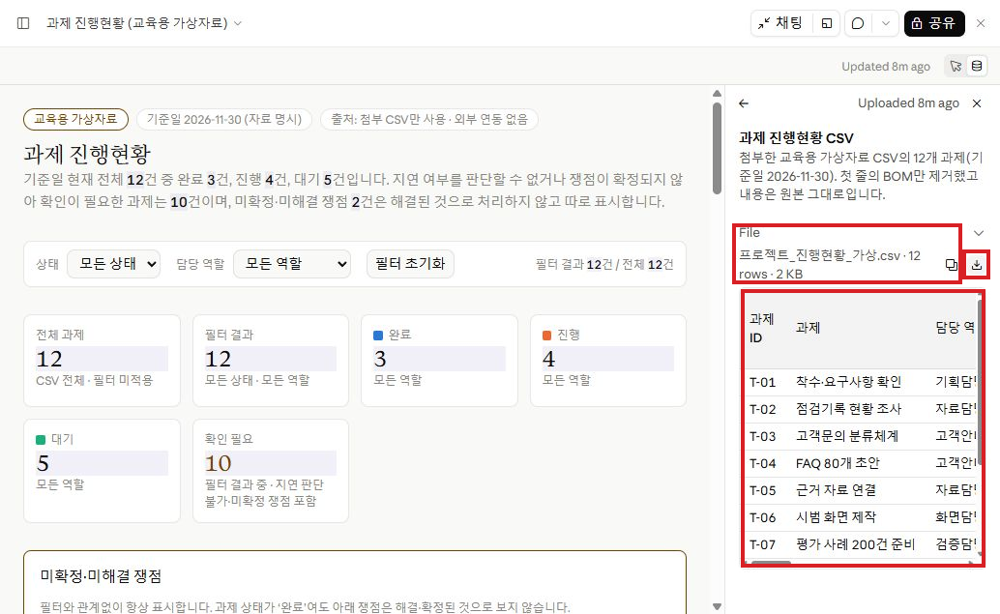
필터가 작동하지 않으면 수정 요청을 보냅니다. Artifact 사용 안내
성공 확인
상태·역할·초기화 세 조작에서 카드와 상세 표가 같은 조건을 적용하고, 원자료 12개 과제·쟁점·근거가 남아 있으면 완료입니다.
선택 참고: 필터 확인 답과 설명 예시
| 조건 | 완료·진행·대기 카드 | 확인 필요 | 상세 표 |
|---|---|---|---|
| 전체 | 3·4·5 | 10 | 12행 |
| 진행 | 0·4·0 | 4 | 4행 |
| 진행+고객안내담당 | 0·2·0 | 2 | 2행 |
| 검증담당 | 0·0·3 | 3 | 3행 |
| 초기화 | 3·4·5 | 10 | 12행 |
진행 과제는 T-03~T-06, 진행+고객안내담당은 T-03·T-04, 검증담당은 T-07·T-08·T-12입니다. 전체 CSV 카드 12건은 비교 기준이고, 필터 결과와 구분합니다. ‘확인 필요 10건’은 미완료 9건과 T-11의 미해결 쟁점에서 계산한 값이며 지연이 확정된 10건이 아닙니다. T-07의 300건 제안과 T-11의 제출기한 충돌을 해결된 것으로 바꾸지 않습니다.
대시보드 설명 예시: Word · PDF · HWPX. 필터 수정 설명: Word · PDF · HWPX. 각각 한 형식만 선택합니다.
다른 형식이 필요한 경우
AI에 첨부하기만 한다면 앞에서 받은 PDF로 충분합니다. 입력 문서를 PC에서 직접 고칠 때만 아래 자료를 받습니다.
압축을 풀고 필요한 문서의 Word 또는 한글 한 형식만 엽니다. 같은 내용의 PDF·Word·한글을 모두 AI에 첨부하지 않습니다. Excel·CSV는 앞 실습에서 받은 파일을 계속 사용합니다.